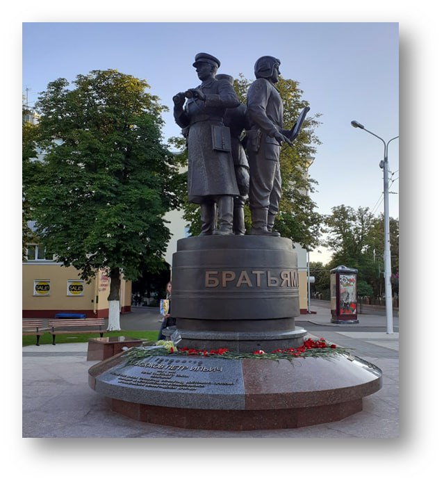

Памятник братьям Лизюковым был установлен в городе Гомеле, Гомельская область, Беларусь.
Памятник посвящен троим братьям - Евгению Ильичу,
Александру Ильичу и Петру Ильичу Лизюковым, которые проявили себя как герои в разные периоды
советской истории.
Евгений Ильич Лизюков принимал участие в Гражданской войне в России и во Второй мировой
войне. Он был командиром различных партизанских
отрядов на оккупированной территории Минской области. Евгений Лизюков погиб 7 июля 1944 года
в бою с немецкими войсками в Пуховичском
районе Минской области. Александр Ильич Лизюков также отличился в Гражданской войне и
Великой Отечественной войне. Он был удостоен
звания Героя Советского Союза за свои боевые подвиги. Александр Лизюков погиб 23 июля 1942
года в бою у села Лебяжье Воронежской области.
Петр Ильич Лизюков служил на различных фронтах Великой Отечественной войны и также был
удостоен звания Героя Советского Союза. Он погиб
30 января 1945 года на окраине Калининграда.
Памятник братьям Лизюковым в Гомеле был установлен в их родном городе в честь их подвигов и
силы духа. Он стал символом мужества и
самопожертвования советских солдат
в годы войны.